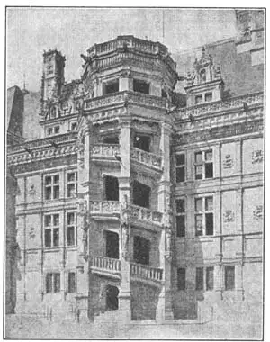
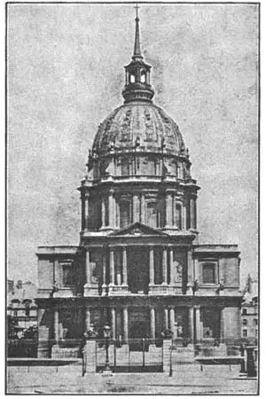

81
TRADE-MARKS
有标记图案的建筑物

YOU have heard of a fireproof building. But have you ever heard of a fireproof animal? A little animal that looks like a lizard and is called a salamander was always supposed to be fireproof. The people of the sixteenth century used to think that if they put a salamander in the fire the salamander wouldn’t mind it a bit. The hotter the fire, the more he’d like it. They used to call as-bestos cloth (which is fireproof) salamander’s skin.
In those days of the sixteenth century there reigned in France a king named Francis I whose badge was a salamander. Francis I also used a capital letter F as a badge. The salamander and the letter F were like trade-marks and Francis I had them put on all the many buildings he built during his reign. He was a powerful monarch with plenty of money to spend and his delight was to spend the money on the works of the best painters, goldsmiths, sculptors, and architects. Many of the painters, sculptors, and goldsmiths were Italians who came to work for Francis I. The architects were mostly Frenchmen.
The buildings of these French Renaissance architects were differ-ent from the Italian Renaissance buildings. Most of the French Renaissance buildings were still Gothic in shape. The lines still ran vertically up from the ground as they did in the Gothic style. You remember the horizontal lines of some of the Italian Renaissance build-ings. This difference was because the Renaissance in France changed from Gothic little by little, while in Italy the Renaissance was not a slow change, but a sudden break from the Gothic.
In Italy many of the Renaissance buildings were churches. In France there were already plenty of fine Gothic churches. Most of the French Renaissance buildings, therefore, were palaces and castles. Chateaux is what the French call them, and we too use the French word when speaking of the French Renaissance.
So many of these chateaux were built along the river Loire in France that the valley of this river is known as the Chateau Country.
A very famous chateau still stands at Blois in the Chateau Country. Parts of the Chateau of Blois were built in the Gothic style before the Renaissance reached France, but one whole section was built by Francis I in the Renaissance style. This section is called the Wing of Francis I. There is a celebrated spiral staircase attached to the outside wall of the building in an open tower—something like a fire-escape. The staircase tower is stone and marble, like the rest of the building. On the staircase are carved again and again the salamander and the letter F of Francis I. The salamanders are royal salamanders and each has a crown above him. Little flames of fire seem to be flying all around the salamanders. These “trade-marks” of Francis I are on other parts of the building, as you can see in the picture.

No.81-1 WING OF FRANCIS I, CHATEAU OF BLOIS, FRANCE
（法国布卢瓦城堡弗朗西斯一世之翼）
Courtesy of The University Prints
Notice that the building is still Gothic enough to have Gothic gargoyles sticking out from the staircase and the roof.
If you should walk down the staircase at the Chateau of Blois and some one else started to walk up at the same time, you two would meet on the stairs. But there is another staircase in France where persons going down never meet persons going up at the same time. It sounds mysterious, but it really happens just that way. The pass-without-meeting staircase is in the central tower of a large chateau at Chambord.
No girl or boy who likes to read of knights and ladies in the days of chivalry could help getting a thrill at seeing the Chateau of Chambord. It is a huge castle, partly fortified and once protected by a moat or ditch of water. It has towers, steep roofs, tall chimneys, and thick stone walls. With its towers and chimneys pointing toward the sky, it really looks more Gothic than Renaissance.
The pass-without-meeting staircase is in the tallest tower and works the way it does because there are two sets of steps which corkscrew up the tower together, one set above the other. The Statue of Liberty in New York has an iron staircase inside it built the same way as the stone staircase at Chambord.
Francis I liked to stay at Chambord when he wanted a change from city life. He liked to stay at Blois, too. But he liked best of all the palace of Fontainebleau, which is noted for its beautiful gardens, terraces, and lakes, and for its rich interiors. The outsides of the palace buildings aren’t as interesting as Chambord and Blois, so we’ll hurry on to still another palace of Francis I. This is the Louvre in Paris.
“But I thought the Louvre was an art gallery!” you say. So it is now, the biggest art gallery in the world, but it wasn’t built as an art gallery. It was built by kings of France for their use as a palace.
The Louvre is so big—one gallery in it is a quarter of a mile long—that it would take you hours and hours just to walk all through it. Of course it wasn’t built all at one time. Francis I built part of it. Then other kings added other parts. It wasn’t finished till late in the nineteenth century. So the Louvre is a good building to study for a complete history of Renaissance architecture in France, from the earliest to the latest styles.
The Louvre is so big that a photograph doesn’t do it justice. In a photograph you can only see one part of it at a time and as each main part looks quite different from its other parts, you really have to be in Paris and see it for yourself to get a good view of it.
Two of the most important of the many architects of the Louvre were Pierre Lescot and Claude Perrault Lescot was the architect for Francis I. Perrault’s work is a century later than Lescot’s. Perrault did the famous east facade with its long row of coupled Corinthian columns. The strange fact is that Perrault was the king’s doctor, not an architect at all, but he managed to make a very good job of the east facade of the Louvre.
The Louvre was used as the kings’palace till the French Revolution. Then the king was beheaded and the Louvre was made into a national art gallery. An art gallery is what it has been ever since.
But though Francis I was showy and spent too much money in building, there was a later French king who was even more showy and spent even more money in building even more magnificent palaces. This king was Louis XIV, whose architect built the tremendous palace of Versailles. The palace at Versailles was added to by later kings until France became a republic. It is now owned and cared for by the French Government. Its beautifully laid out grounds add to the magnificence of the palace, but the buildings themselves are monotonous, too much alike, too long and regular. The most famous part is the Hall of Mirrors, a gigantic room with mirrors along the walls. The Hall of Mirrors is where the peace treaty was signed after World War I.
At Versailles, not very far from the big palace, is a much smaller building called the Petit Trianon. It was built by Louis XV and became the favorite residence of Marie Antoinette, the queen who was later beheaded in the French Revolution.
The French Revolution brings us almost up to the nineteenth century. In the nineteenth century the French erected several buildings that have become famous. One of these is the Dome of the Invalides, a building sacred to Frenchmen because it contains the tomb of Napoleon. In it you can see Napoleon’s badge or trade-mark—a capital letter N.
The French Panthéon has a somewhat similar dome, with however, a circle of slim columns around the base. The Panthéon is used as a church and is a shrine to the memory of Saint Genevieve, the patron saint of Paris. It contains the celebrated mural paintings of scenes from the life of Saint Genevieve.

No.81-3 DOME OF THE INVALIDES,
PARIS（巴黎圆顶型荣军院）
France, and especially Paris, has many other handsome buildings. I wish I could tell you about them all. But I’m sure there are enough French names in this chapter already to keep your memory busy. If you can’t name them all without looking back, you’ll know why I’m not going even to mention the Madeleine, the Arc de Triomphe, L’Orangerie, the Eiffel Tower or the Opéra.
What! I’ve already mentioned them? So I have. Well, anyway, I won’t say anything more about them. So there!
【中文阅读】
你肯定听说过某种防火屋，但你可听说过防火的动物吗？一种叫做蝾螈的小动物，看起来像蜥蜴，就是防火的。16世纪的人们常常认为即使你把蝾螈扔进火里， 它也毫不在乎。火越大，它就越喜欢。人们过去一直把防火的石棉叫做蝾螈皮。
16世纪时，有一位叫弗朗西斯一世的国王统治着法国，他的徽章就是一个蝾螈造型。弗朗西斯一世也用大写字母F做过徽章。蝾螈和字母F就像标记图案。弗朗西斯把许多他统治时期建造的建筑物都贴上了这种标记图案。他是一位强大的君主，财力充足。他喜欢把钱花在绘画、金器、雕刻和建筑上。画家、雕刻家和金匠大多出自意大利。他们就从意大利来到法国，为弗朗西斯一世效劳，而建筑师大多是法国人。
法国的文艺复兴式建筑与意大利的文艺复兴式建筑不同。法国大部分文艺复兴式建筑在外形上还保留着哥特式风格。线条仍然是垂直于地面的，和哥特式风格一样。还记得某些意大利文艺复兴式建筑的水平线条吧。之所以有此差别，是因为意大利的文艺复兴式建筑不是从哥特式风格中渐变出来，而是突变，但法国的文艺复兴式建筑却是从哥特式风格中慢慢变化出来的。
意大利许多文艺复兴式建筑物都是教堂，而法国却早已建造过许多精致的哥特式教堂了。因此法国大部分文艺复兴式建筑物多为宫殿和城堡。法国人自己把它们叫做“法式城堡”，我们在提到法国文艺复兴式建筑时，也这样称呼。
法国的许多城堡都建在卢瓦尔河沿岸，因此这条河谷便以“城堡之乡”而闻名。
城堡之乡的布卢瓦至今还屹立着一座非常有名的城堡。在文艺复兴运动到达法国之前，布卢瓦城堡的部分建筑物仍是哥特式风格，但弗朗西斯一世把其中一个完整部分建成了文艺复兴式。这个部分叫做“弗朗西斯一世之翼”。建筑物外墙建有一著名的旋转楼梯，上面建有一座敞口的塔——有点像是防火应急出口。这种梯塔和建筑物的其他部分一样，都是由石块和大理石筑成。塔梯上到处刻着弗朗西斯一世的蝾螈和 F字母标记图案。图案上的蝾螈也都是皇室蜥蜴，因为每只蝾螈都头戴皇冠。蝾螈周围似乎都是正在舞动的小火苗。弗朗西斯一世的这些标记图案也刻在建筑物的其他部位，如图所示。
注意这座建筑物还有某些地方完全呈哥特式风格，比如在塔梯和屋顶的相连处就建有一个哥特式滴水嘴。
如果你从布卢瓦城堡的塔梯往下走，而正好有一个人往上走，那你们就会在梯子上相遇。但法国还有另外一种梯子，下来的人永远不会碰到上去的人。这听起来有点不可思议吧，但那的确是真的。这种单行梯就在香波尔大城堡的中心塔楼里。
喜欢读骑士时代有关骑士和美人故事的小朋友在见到香波尔城堡时，没有哪一个能忍住兴奋的尖叫。因为那座城堡太大了，部分用防御工事作了加固，四周曾经用护城河或壕沟作防御。它屋顶陡峭，烟囱高耸，石墙厚实，还有许多塔。它的塔和烟囱都直耸云霄。它看起来真的不像是文艺复兴式建筑，反而更具哥特式风格。
单行梯设在最高的塔楼里，且只具单行功能，因为有两级台阶将塔呈螺旋状拧到一起，一级建在另一级上。纽约自由女神像内的铁梯和香波尔城堡的石梯的建造方式一样。
当弗朗西斯一世想改变一下城市生活时，他就到香波尔城堡呆一段日子。他也喜欢到布卢瓦城堡住。但他最喜欢枫丹白露宫，这里有漂亮的花园、梯田、湖泊，以及丰富多彩的内部设施，这些都闻名遐迩。只是枫丹白露宫的建筑外部没有香波尔城堡 和布卢瓦城堡的建筑外部那么引人注目。所以我们还是赶快来看看弗朗西斯一世的其他王宫吧。还有一座就是位于巴黎的卢浮宫。
“但我认为卢浮宫是艺术展览馆！”你会这样说。是的，而且它现在还是世界上最大的艺术展览馆，可它本来不是艺术馆。它本来是法国君主们为自己而建造的王宫。
卢浮宫非常大——其中有间画廊长1/4英里——要把卢浮宫全部走完需要好几个小时。当然，它并不是一下子就建好的。弗朗西斯一世建造了一部分，后代国王加建了其他部分，直到19世纪末才全部造好。因此卢浮宫是一个可以完整学习法国文艺复兴式建筑史的好地方，它囊括了从古老和近代的建筑风格。
卢浮宫太大了，一张照片根本就拍不下它的全貌。在照片上你只能看到某个时期某个部分的剪影，由于每一部分看起来都各不相同，你真的应该到巴黎来，亲眼看看它的全貌。
在建造卢浮宫的众多建筑师中，最重要的两人是皮埃尔·雷斯科和克劳德·佩罗。雷斯科是弗朗西斯一世的御用建筑师。佩罗的工作比雷斯科晚一个世纪。佩罗用长排科林斯式对柱完成了卢浮宫最著名的东面造型。但奇怪的是佩罗根本就不是什么建筑师，而是御医，但就是他成功地完成了卢浮宫的东面设计。
卢浮宫在法国大革命爆发前一直被用作王宫。不久国王就被送上了断头台，王宫这才被改造成国家艺术馆。一座艺术馆就这样沿袭下来了。
尽管弗朗西斯一世好大喜功，在建筑方面挥霍无度，可在他之后还有更喜欢炫耀更挥霍无度的国王，他建的王宫更是富丽堂皇。这位国王就是路易十四。他的御用建筑师建造了“凡尔赛宫”。后来的国王不断地在凡尔赛宫上添加修建，直到法国称为共和国时才停止。它现在归法国政府所有并负责维护。王宫的地面布局非常完美，衬托出王宫的壮观，但王宫的建筑物本身却很单调，太长，太匀称，缺乏特色。宫内最著名的地方是“镜厅”，室内空旷，墙上挂满了镜子。“一战”后的和平条约就是在镜厅签署的。
在凡尔赛，离这座大王宫不远处有座小建筑物，叫做“小特里阿农宫”。它是路易十五建造的，并成为玛丽·安东尼王后最喜欢的住处。玛丽·安东尼王后后来也在法国大革命期间被推上断头台。
法国大革命开启了19世纪新篇章。在19世纪，法国又建造了许多著名的建筑物，其中包括“圆顶型荣军院”。它对法国人来说极为神圣，因为拿破仑的墓就设在此地。在这里你可以看到拿破仑的徽章或标记图案——一个大写的字母N。
“法国万神殿”也有类似的圆顶，只是稍微小一点，但是却有一圈细长的柱子环绕根基。万神殿既被用作教堂，也被用作纪念巴黎守护神圣热内维尔夫的神社。
在法国，特别是巴黎，有许多漂亮的建筑物。我真希望把它们全部介绍给你们。但我相信，这一章出现的法国名称已经足够多了，它们已经把你们的小脑瓜都塞得满满的了。如果你们不往回翻就不能说出那些名称，你就知道我为什么不再提玛德琳教堂、凯旋门、橘园美术馆、埃菲尔铁塔，或大剧院了。
什么！我已经提过它们了？是的。我刚刚提到了。好了，无论怎样，我绝对不会再多说了。就介绍到这里吧！